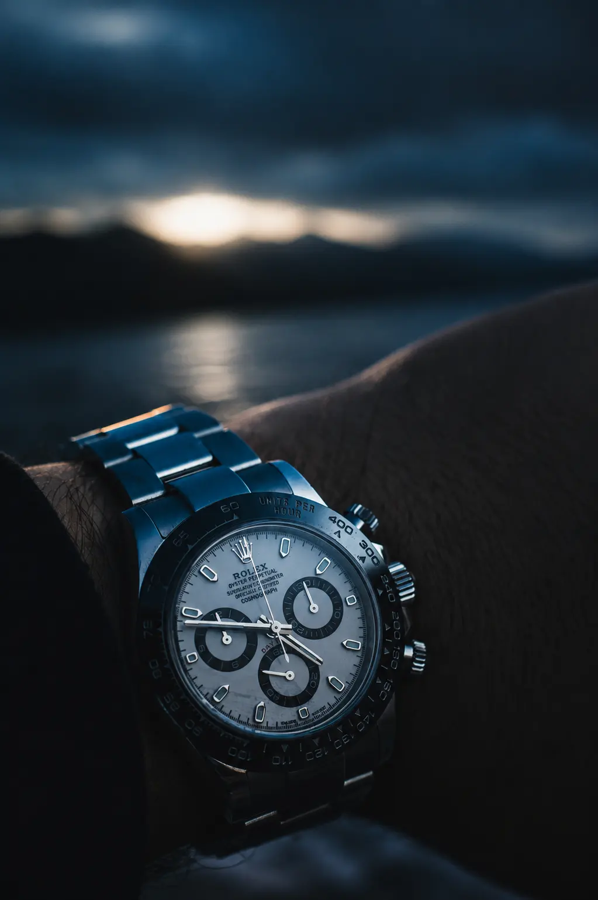

The Winner · 106'
Ferran Torres
“El gol de todo un país” — the goal of an entire country. Ferran Torres’ extra-time strike beat Argentina 1–0 and made Spain world champions for the second time. This piece isn’t about the goal. It’s about what the champions had on their wrists when the whistle went — because that, more than the scoreline, tells you who they are.
Seen on his Instagram · @ferrantorres →Spain are world champions again. On Sunday, at a packed MetLife, Ferran Torres settled it against Argentina in the 106th minute — a 1–0 win, a second star on the shirt after 2010, and a first nobody else can claim: no nation had ever held the men’s and women’s World Cups at the same time. Spain do now.
The next morning the internet did what it always does — gawk at the trophy, replay the goal, move on. We are going to do something else. Spain didn’t win with one watch; they won with five characters, and their wrists tell you exactly who they are. This is each, read through the watch they chose — which is what The Wrist of Champions exists to do. (Identifications verified by our sources. The steel references are routable — priced with Fair Value, found in the Watch Finder; the diamond flex is not, and we won’t pretend otherwise.)
The Architect — Luis de la Fuente
The loudest trophy; the quietest watch. When de la Fuente lifted the World Cup, there was a watch on his arm — and it was the most understated one in the stadium: a dark IWC Ingenieur, the integrated-bracelet sports watch Gérald Genta drew in 1976, in a near-invisible register. No diamonds. No gold. No six-figure grail shouting for the cameras on the one night he’d be photographed more than any other in his life.
That is the whole man in one object. De la Fuente is not the story-book superstar coach; he is the quiet architect who came up through Spain’s youth ranks and was doubted at every rung. The Ingenieur is Genta’s under-the-radar third act, after the Royal Oak and the Nautilus — the watch of someone with nothing to prove, and who knows it. And unlike almost every other watch on this list, it is buyable: current production, around $12,000 at retail, if you can find one.
IWC Schaffhausen · The Architect
Ingenieur — steel, integrated bracelet, 40mm
The Purist — Pedri
Precision isn’t loud. It simply arrives on time. Pedri is the metronome — the midfielder who makes a World Cup look like a training-ground rondo. His watch is the purist’s chronograph: a steel Rolex Cosmograph Daytona on the Oysterflex, no gold, no fuss. It is the most liquid grail money in the world — the one every serious collector wants and almost nobody gets at retail — and it is exactly the taste you can price and chase.

Rolex · The Purist & The Veteran
Cosmograph Daytona — steel & Everose
The Daytona was all over this squad, in steel on Pedri and in Everose gold on Merino. It trades every single day — so start with what one truly costs, not the hype number.
The Veteran — Mikel Merino
Experience doesn’t need to shout — it shows up when it matters. Merino is the big-moment man, the one who arrives in the box exactly when the game asks him to. His Daytona trades steel for Everose gold: same grail, warmer register — gold done the quiet way, weight without noise. The veteran’s version of the purist’s watch.
The Competitor — Dani Olmo
Built for pressure. Comfortable inside it. Olmo plays his best football when the match is tightest. The Audemars Piguet Royal Oak Offshore is the Royal Oak with armour on — bigger, brawnier, built to take a hit and keep perfect time. It is the sports flex that still lives in the real world: current-adjacent, steel, and something you can actually price and chase.

Audemars Piguet · The Competitor
Royal Oak Offshore — steel chronograph
The Prodigy — Lamine Yamal
At nineteen, most players dream of history. Champions already wear it. Yamal is the teenager who plays like he has been here before — and his wrist is the one true flex among the champions: a fully diamond-set Everose Audemars Piguet Royal Oak Chronograph, jewellery-department, six figures, undeniably gorgeous. It is also, like Ronaldo’s diamond Patek, the single piece on this list with no honest routable equal. Admire it. We won’t insult you by selling a “dupe” that isn’t one.
A World Cup-winning manager reached for a stealth steel watch. A nineteen-year-old reached for diamonds. Both told you exactly who they are.
The Wrist of ChampionsThe Honest Takeaway
Stories To Watch isn’t here to tell you a champion owns an expensive watch — you already know that. We’re here to ask the more interesting question: what kind of person chooses this watch? The architect answers the biggest night of his life with a watch nobody recognises. The purist wears the cleanest steel grail there is. The prodigy wears diamonds because, at nineteen, why not. Five champions, five characters, five wrists.
And unlike the diamonds, most of that taste is buyable. The steel the champions wore — the Daytona, the Ingenieur, the Offshore — resolves to references that trade every day. So do the two useful things no highlight reel will tell you to: find what one is really worth, then find one from a source you can trust.
Champions · Los Sueños Se Cumplen
Spain — World Champions 2026
The whole squad, on the podium, under the confetti — posted by the official Spain account. Different wrists, different stories, one champion. And the watches that matter most on this list are the ones you can actually own.
Via the official Spain account · @sefutbol →The Two-Step
Price the champions’ steel with Fair Value, then find it in the Watch Finder
Retail vs. real market · Authorised dealers · Grey market · Auction houses